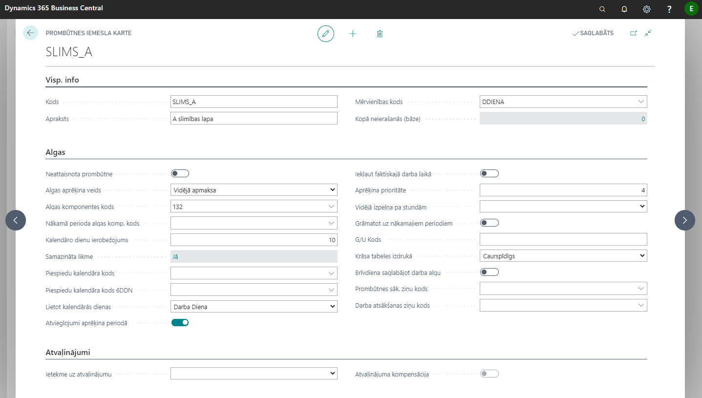
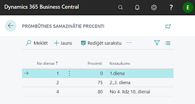

Prombūtnes iemesli
Lai reģistrētu prombūtni, nepieciešams Neierašanās iemesla kods. Visi neierašanās iemeslu kodi tiek sākotnēji importēti sistēmā ar konfigurācijas pakotnes starpniecību un tie ir apkopoti sarakstā Prombūtnes iemesli. Koda kartiņu var atvērt ieklikšķinot nepieciešamā koda rindiņā un nospiežot rīkjoslā uz pogām Darbības - Jauns dokuments - Karte.
Prombūtņu iemesla kodus un to uzstādījumus ieteicams patstāvīgi nemainīt.

Cilne Visp. info
| Lauka nosaukums | Apraksts |
|---|---|
| Kods | Brīvi definēts prombūtnes kods. |
| Apraksts | Prombūtnes apraksts. |
| Mērvienības kods | Izvēlas no mērvienību klasifikatora. |
| Kopā neierašanās (bāze) | Sistēma uzrāda, cik kopā ir reģistrēta šī prombūtne. Ņemot vērā ka tas ir standarta Microsoft lauks, kurš nav uzturēts, vienmēr rāda nulli. |
Cilne Algas
| Lauka nosaukums | Apraksts |
|---|---|
| Neattaisnota prombūtne | Neattaisnotas prombūtnes pazīme. |
| Algas aprēķina veids | Izvēlas no saraksta, kādā veidā tiek aprēķināta prombūtne: 1. Vidējā apmaksa – aprēķina periodu vispirms ņem iepriekšējos 6 mēn., ja nav, tad iepriekšējos 12 mēn. Ja arī nav, tad programma pārbauda Algu uzstādījumos, vai ir atzīme laukā Nepilniem mēnešiem lietot tekošo mēnesi vid. izpeļņai. Ja šajā laukā nav atzīmes, tad rēķina vidējo no minimālās algas; 2. Saglabāta alga (Cita komponente) – par izvēlēto periodu saglabās aprēķināto pamatalgu, summu izdalot citā algas komponentē; 3. Saglabāta alga – par izvēlēto periodu nekas nemainās pamatalgas aprēķinā (piem.: attaisnota prombūtne); 4. Iepr. apmaksa – izmaksā pamatalgu Starpizmaksās par izvēlēto periodu (atvaļinājums uz priekšu); 5. Bez algas – par izvēlēto periodu neaprēķina algu (piem.: bezalgas atvaļinājums, neattaisnota neierašanās); 6. Bez atvieglojumiem – Neaprēķina algu un atvieglojumus (piem.: B lapas); 7. Tukšums – ignorē algu aprēķinos. |
| Algas komponentes kods | Norāda atbilstošo algas komponenti. |
| Nākamā perioda algas komp. kods | Norāda komponenti, ja samaksa par nākamo periodu tiek izdalīta citā komponentē. |
| Kalendāro dienu ierobežojums | Norāda prombūtnes iemesla dienu skaitu (piem. slimības lapas, komandējumi), lai brīdinātu par ierobežojumu pārsniegšanu. |
| Samazināta likme | Norāda samazinātās likmes pa dienām, (piem.: kādā veidā tiek apmaksātas slimības lapas). Klikšķiniet uz lauka linku, lai iestatītu.  |
| Piespiedu kalendāra kods | Izvēlas noklusēto kalendāru, pēc kura tiks veikts aprēķins konkrētai prombūtnei. Atvaļinājumiem ir savs noklusētais kalendārs. |
| Piespiedu kalendāra kods 6DDN | Izvēlas noklusēto kalendāru, pēc kura tiks veikts aprēķins konkrētai prombūtnei pēc sešu darba dienu kalendāra. |
| Lietot kalendārās dienas | Norāda prombūtnes aprēķina veidu pa dienām (periods): - Darba diena; - Kalendārā diena; - Ar roku - dienu skaits nav atkarīgs no perioda. |
| Atvieglojumi aprēķina periodā | Atzīme laukā norāda, ka atvieglojumi būs šajā mēnesī. Ja atzīmes nav, tad tie tiks pārnesti arī uz priekšu. (piem.: gari atvaļinājumi skolotājiem). |
| Iekļaut faktiskajā darba laikā | Ja ir atzīme šajā laukā, tad tiek uztvertas kā faktiski nostrādātās dienas (piem.: komandējums). |
| Aprēķina prioritāte | Norāda prombūtnes iemesla kārtas skaitli algas aprēķināšanas darbību ķēdē - jo mazāks skaitlis, jo augstāka prioritāte. Prioritāti var norādīt gan algas komponentēm, gan arī prombūtnes iemesliem. Ja algas komponente nāk no prombūtnes ieraksta (atval. komp.), tad prioritāte tiek ņemta no prombūtnes iemesla. |
| Vidējā izpeļņa pa stundām | Pastāv iespēja izvēlēties: tukšums, tikai SDL ( summētajam darba laikam), visiem.. |
| Grāmatot uz nākamajiem periodiem | Ķeksis tiek ielikts gadījumā, ja pārejošās prombūtnes nākamā perioda daļa tiek grāmatota uz nākamā perioda izdevumiem. |
| G/U Kods | Norāda brīvi izvēlētu kodu, kas būs apzīmējums šim prombūtnes veidam tabeles izdrukā. |
| Krāsa tabeles izdrukā | Izvēlas krāsu, ar kādu marķētas prombūtnes dienas tabeles izdrukā. |
| Brīvdiena saglabājot darba algu | Tiek izmantota, ja darbiniekam iedota brīvdiena, kura jāapmaksā pēc principa “saglabājot darba algu”, bet neiekļaut faktiskajā laikā (piem.: donora dienas). |
| Prombūtnes sāk. ziņu kods | Norāda ziņu kodu, kāds tiks atspoguļots atskaitē Ziņas par darba ņēmējiem saistībā ar prombūtnes sākumu. Darbinieka ziņu kods sistēmā aizpildīsies pēc prombūtnes sākuma datuma ievadīšanas. |
| Darba atsākšanas ziņu kods | Norāda ziņu kodu, kāds tiks atspoguļots atskaitē Ziņas par darba ņēmējiem saistībā ar prombūtnes beigām. Darbinieka ziņu kods sistēmā aizpildīsies pēc prombūtnes beigu datuma ievadīšanas. |
Cilne Atvaļinājumi
| Lauka nosaukums | Apraksts |
|---|---|
| Ietekme uz atvaļinājumu | Norāda prombūtnes ietekmi uz ikgadējo atvaļinājumu atlikumu. |
| Atvaļinājuma kompensācija | Atvaļinājuma kompensācijas pazīme. Pielietota Atvaļinājuma kompensācijas koda kartiņā. |